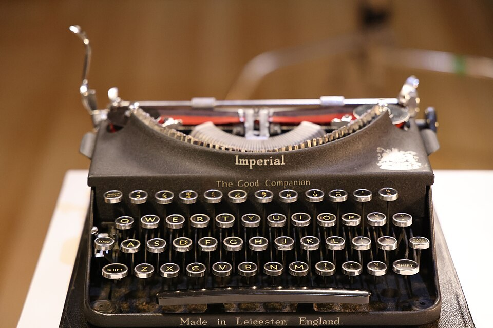

Start your own collection

Collecting vintage things is a fun hobby. You do not need a lot
of money, just patience and a good eye. As the saying goes,
one person's trash is another person's treasure
.
A good first item is an old typewriter. You can read about how they work on the Wikipedia page about typewriters.
Tips for new collectors
- Pick one kind of item to start with.
- Keep your things clean and dry.
- Do not pay too much, ask for a better price.
Where to look
| Place | What you can find | |
|---|---|---|
| Small things | Big things | |
| Charity shop | Books and records | Furniture |
| Garage sale | Cups and toys | Radios |
| Markets | Cameras and badges | Typewriters |